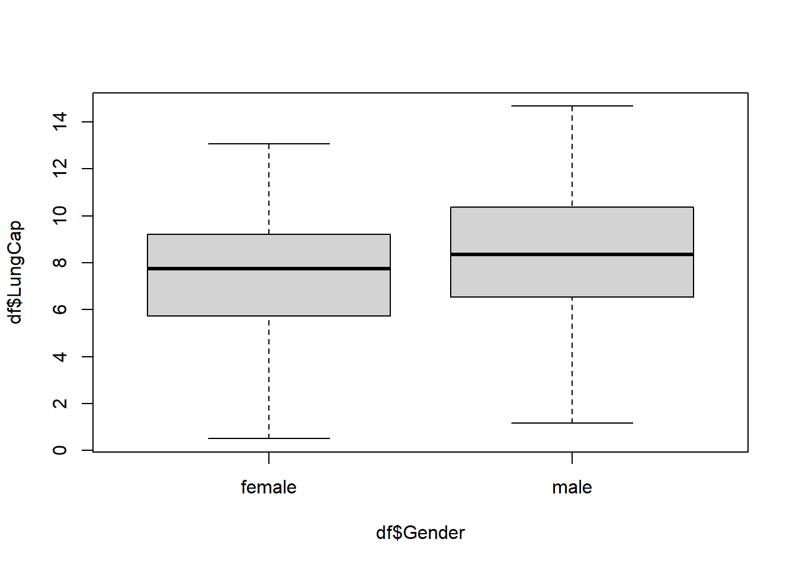
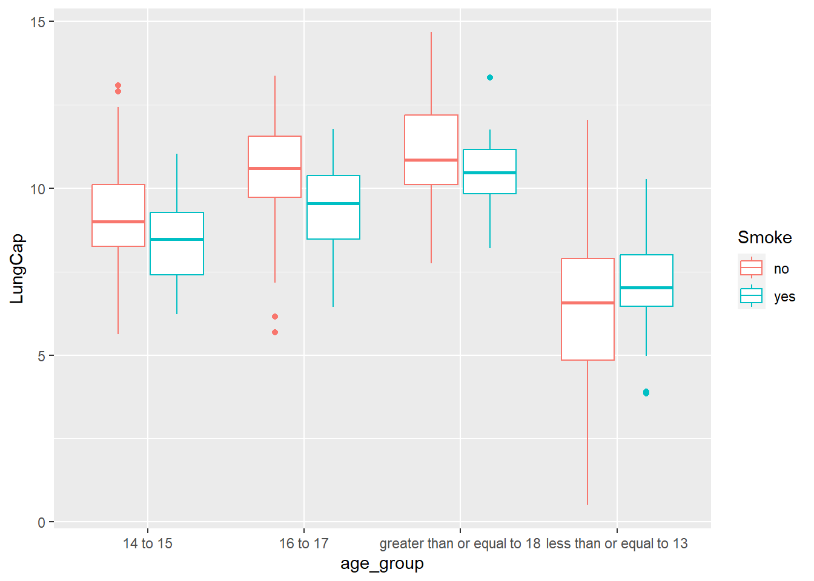

Code
library(readxl)
library(tidyverse)library(readxl)
library(tidyverse)Read in data for question 1.
df <- read_excel("_data/LungCapData.xls")The distribution of LungCap looks as follows:
hist(df$LungCap)
The histogram suggests that the distribution is close to a normal distribution. Most of the observations are close to the mean. Very few observations are close to the margins (0 and 15).
The distribution of LungCap by Gender looks as follows:
boxplot(df$LungCap ~ df$Gender)
The distribution shows that males, on average, have a higher lung capacity than females.
The mean lung capacities for smokers and non-smokers is shown below.
df %>%
group_by(Smoke) %>%
summarise(mean = mean(LungCap))# A tibble: 2 × 2
Smoke mean
<chr> <dbl>
1 no 7.77
2 yes 8.65These means are not what I would have expected to see. This shows smokers have a higher mean lung capacity than non-smokers.
The mean lung capacities for smokers and non-smokers by age group is shown below.
df_age_group <- df %>%
mutate(
age_group = case_when(
Age < 14 ~ "less than or equal to 13",
Age == 14 ~ "14 to 15",
Age == 15 ~ "14 to 15",
Age == 16 ~ "16 to 17",
Age == 17 ~ "16 to 17",
Age > 17 ~ "greater than or equal to 18")
)
df_age_group %>%
group_by(age_group, Smoke) %>%
summarise(mean = mean(LungCap))`summarise()` has grouped output by 'age_group'. You can override using the
`.groups` argument.# A tibble: 8 × 3
# Groups: age_group [4]
age_group Smoke mean
<chr> <chr> <dbl>
1 14 to 15 no 9.14
2 14 to 15 yes 8.39
3 16 to 17 no 10.5
4 16 to 17 yes 9.38
5 greater than or equal to 18 no 11.1
6 greater than or equal to 18 yes 10.5
7 less than or equal to 13 no 6.36
8 less than or equal to 13 yes 7.20The distribution of LungCap by age_group and smoker looks as follows:
ggplot(df_age_group, aes(x=age_group, y=LungCap, color = Smoke)) +
geom_boxplot()
The mean lung capacity for non-smokers is higher than smokers for all age groups except for those age 13 or younger. This is interesting as it was observed earlier that overall smokers have a higher mean lung capacity than non-smokers. This led me to wonder if there are more individuals age 13 or younger in this sample than other age groups, and also what the count of smokers versus non smokers is for this sample.
The count by age group and smoker type is shown below.
df_age_group %>%
group_by(age_group, Smoke) %>%
summarise(total_count = n())`summarise()` has grouped output by 'age_group'. You can override using the
`.groups` argument.# A tibble: 8 × 3
# Groups: age_group [4]
age_group Smoke total_count
<chr> <chr> <int>
1 14 to 15 no 105
2 14 to 15 yes 15
3 16 to 17 no 77
4 16 to 17 yes 20
5 greater than or equal to 18 no 65
6 greater than or equal to 18 yes 15
7 less than or equal to 13 no 401
8 less than or equal to 13 yes 27The overall count by smoker type is shown below.
df %>%
group_by(Smoke) %>%
summarise(total_count = n())# A tibble: 2 × 2
Smoke total_count
<chr> <int>
1 no 648
2 yes 77Data for question 2.
convictions <- data.frame(number_convictions = 0:4, freq = c(128, 434, 160, 64, 24)) %>%
mutate(prop = freq/810)
print(convictions) number_convictions freq prop
1 0 128 0.15802469
2 1 434 0.53580247
3 2 160 0.19753086
4 3 64 0.07901235
5 4 24 0.02962963The probability that a randomly selected inmate has exactly 2 prior convictions is as follows:
dbinom(x= 1, size= 1, prob= 160/810)[1] 0.1975309The probability that a randomly selected inmate has fewer than 2 prior convictions is as follows:
dbinom(x= 1, size= 1, prob= sum(128/810 + 434/810))[1] 0.6938272The probability that a randomly selected inmate has 2 or fewer prior convictions is as follows:
dbinom(x= 1, size= 1, prob= sum(128/810 + 434/810 + 160/810))[1] 0.891358The probability that a randomly selected inmate has more than 2 prior convictions is as follows:
dbinom(x= 1, size= 1, prob= sum(64/810 + 24/810))[1] 0.108642The expected value for the number of prior convictions is as follows:
ev <- sum(convictions$number_convictions * convictions$prop)
print(ev)[1] 1.28642The variance for prior convictions is as follows:
var <- sum((convictions$number - ev) ^ 2 * convictions$prop)
print(var)[1] 0.8562353The standard deviation for prior convictions is as follows:
sd <- sqrt(var)
print(sd)[1] 0.9253298